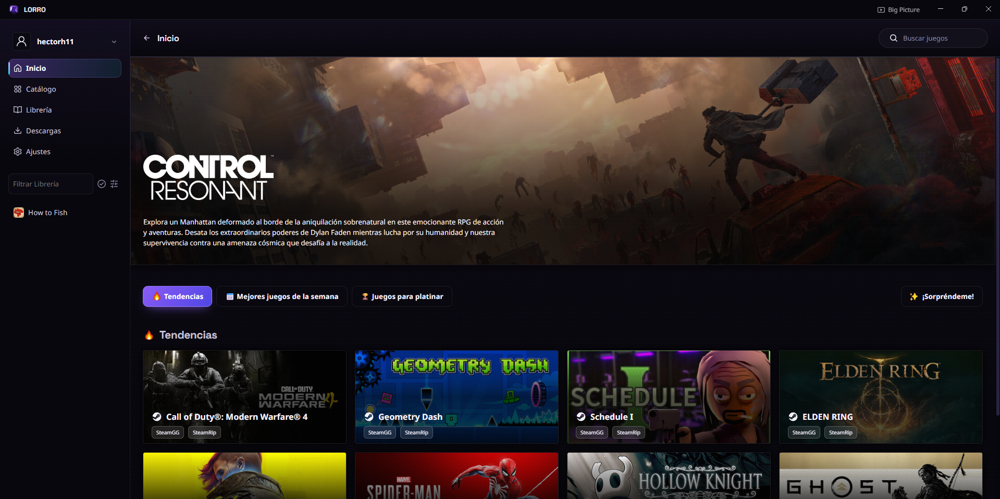
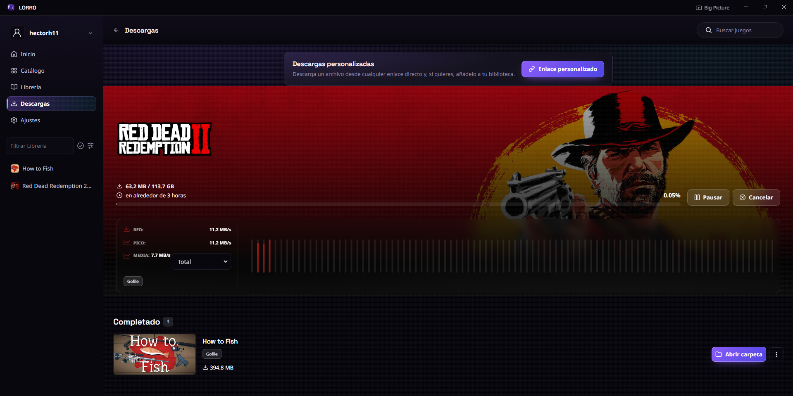
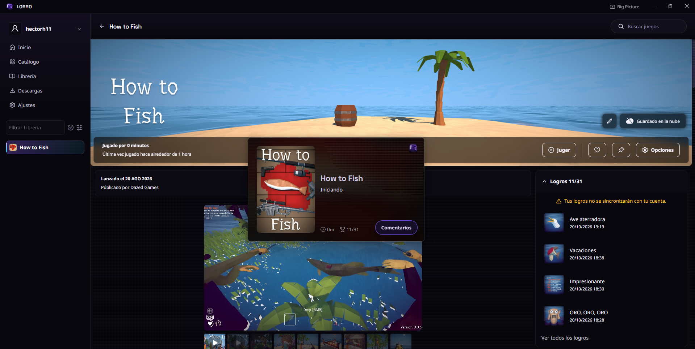
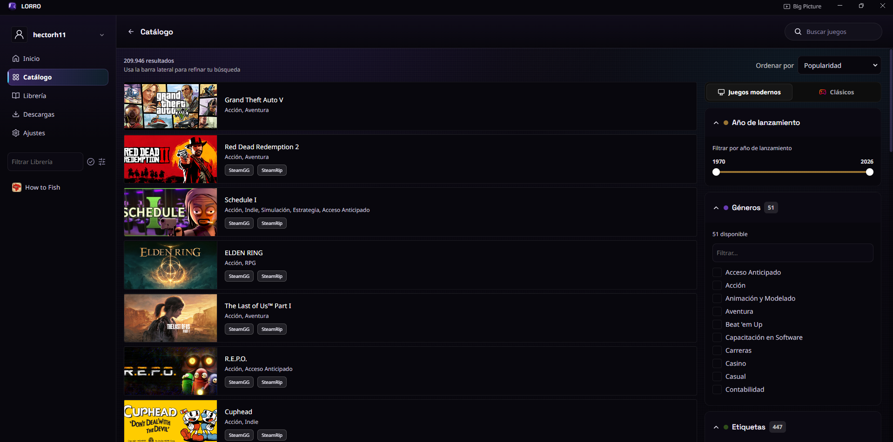

Un vistazo al launcher
Capturas reales de la aplicación en marcha.

Página de inicio con lanzamiento destacado y marcas calientes
Descargas propias con gráfico de velocidad y cola persistente
Ficha del juego con lanzamiento, logros y sesiones de juego
Catálogo con más de 200.000 resultados y filtros por año y género⬇️
Descargas multi-conexión
Hasta 16 conexiones en paralelo, cola persistente y reanudación tras interrupciones.
⏱️
Sesiones de juego
Cronometra automáticamente lo que juegas, por juego, con estadísticas locales.
💾
Copias de partidas
Backups automáticos y manuales de tus guardados, con restauración segura.
🖥️
Big Picture
Modo salón navegable con mando, para jugar desde el sofá.
Descarga la última versión
Instalador NSIS o versión portable, directos a la última release de GitHub.
Directo a la página de releases del proyecto en GitHub.